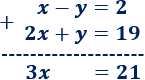
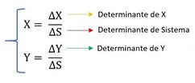
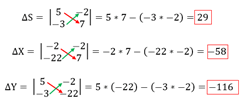
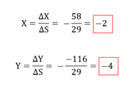

Álgebra: ecuaciones lineales
Maneras de resolver sistemas de Ecuaciones
Igualación
: Consiste en despejar una variable en la primera ecuación y en la segunda para después igualarlas.
Ejemplo
x-y=5
x+2y=-1
1. Aislamos una incógnita en las dos ecuaciones
Escogemos aislar la incógnita x:
x-y=5
x+2y=-1
x=5+y
x=-1-2y
2. Igualamos las expresiones
Como x=x, podemos igualar las expresiones obtenidas:
5+y=-1-2y
3. Resolvemos la ecuación
Resolvemos la ecuación de primer grado obtenida:
5+y=-1-2y
2y+y=-1-5
3y=-6
y=-6/3
y=-2
4. Calculamos la otra incógnita sustituyendo
Sustituimos el valor de la incógnita y en alguna de las expresiones calculadas anteriormente (la primera, por ejemplo):
x=5+y
x=5-2
x=3
La solución del sistema es
x=3
y=-2
Sustitución
En el cual se despeja una variable de la primera ecuación y se sustituye en la segunda.
Ejemplo
4+x=2y
2x-y=1
1. Aislamos una incógnita
Vamos a aislar la x de la primera ecuación. Como su coeficiente es 1, sólo tenemos que pasar el 4 restando al otro lado:
4+x=2y
X=2y-4
Ya tenemos aislada la incógnita x.
2. Sustituimos la incógnita en la otra ecuación
Como tenemos que la incógnita x es igual 2y-4, escribimos 2y-4 en lugar de la x en la segunda ecuación (sustituimos la x):
2x-y=1
2(2y-4)-y=1
4y-8-y=1
Observad que hemos utilizado paréntesis porque el coeficiente 2 tiene que multiplicar a todos los términos.
3. Resolvemos la ecuación obtenida:
4y-8-y=1
3y-8=1
3y=9
y=9/3=3
Ya sabemos una incógnita: y=3.
4. Calculamos la otra incógnita sustituyendo:
Al despejar la incógnita x teníamos
X=2y-4
Como conocemos y=3, sustituimos en la ecuación:
X=2y-4
X=2*3 -4
X=6-4=2
Por tanto, la otra incógnita es x=2.
La solución del sistema es
x=2
y=3
Suma-Resta
Consiste en multiplicar una de las dos ecuaciones por algún número para que al sumar o restar las dos ecuaciones se cancele una variable.
Ejemplo
x-y=2
2x+y=19
1. Comprobamos los coeficientes
Hay que asegurarse de que al sumar o restar las ecuaciones, alguna de las incógnitas desaparece:
Escogemos una incógnita a eliminar: la y.
Sus coeficientes son -1 (en la primera) y 1 (en la segunda).
Como son iguales y de signo contrario, sumaremos las ecuaciones.
Nota: si ninguna de las incógnitas tiene el mismo coeficiente, podemos multiplicar cada ecuación por el número distinto de 0 que sea necesario para conseguirlo.
2. Sumamos o restamos las ecuaciones
Sumamos las ecuaciones para eliminar la y:
3. Resolvemos la ecuación obtenida
3x=21
x=21/3
x=7
4. Calculamos la otra incógnita sustituyendo
Sustituimos la incógnita x por 7 en alguna de las ecuaciones y la resolvemos:
x-y=2
7-y=2
y=7-2
y=5
La solución del sistema es:
x=7
y=5
Determinantes
Consiste en encontrar la determinante de X y de Y, y la del sistema.
Ejemplo
5x-2y=-2
-3x+7y=-22 Para resolverlo utilizando el método de determinantes, tenemos que siempre resolver los siguientes cálculos, para todos los sistemas de ecuaciones independientemente de sus valores, las resolución es siempre la misma y hay que plantear lo siguiente. Pero, ¿como calculo los determinantes de X,Y y el del sistema? muy simple, de la siguiente manera.
Para Calcular el determinante del sistema ΔS, Armamos el determinante solo con los valores que estan multiplicando a la X y la Y. Es por eso que nos queda la estructura que vimos arriba, luego multiplicamos cruzados, y restamos los múltiplos.
Para Calcular el determinante de X ΔX lo que tenemos que hacer es armarnos el determinante con los valores que están a la derecha del signo igual, y con los valores que están multiplicando a la Y. De esta forma obtenemos el determinante que vimos arriba. luego la operatoria es la misma, multiplicamos cruzado y restamos las multiplicaciones. Para Calcular el determinante de Y ΔY lo que tenemos que hacer es armarnos el determinante con los valores que están a la derecha del signo igual, y con los valores que están multiplicando a la X. De esta forma obtenemos el determinante que vimos arriba. Luego la operatoria es la misma, multiplicamos cruzado y restamos las multiplicaciones. Ahora que ya tenemos los valores de los determinantes, lo que sigue es encontrar los valores correspondientes a X e Y, y de esa forma resolvemos la ecuación. Para eso debemos hacer uso de las formulas que están en la segunda imagen. Es decir que para calcular el valor de X tenemos que dividir el determinante de X con el Determinante del sistema y para encontrar el valor de Y tenemos que dividir el determinante de Y con el determinante del sistema. 